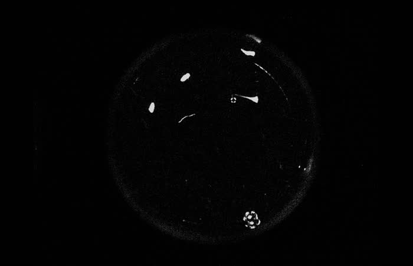
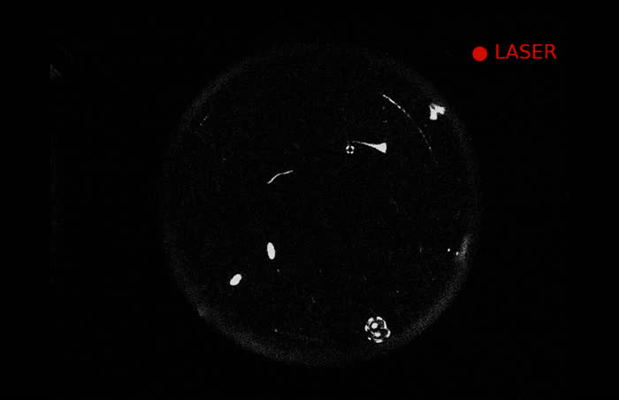
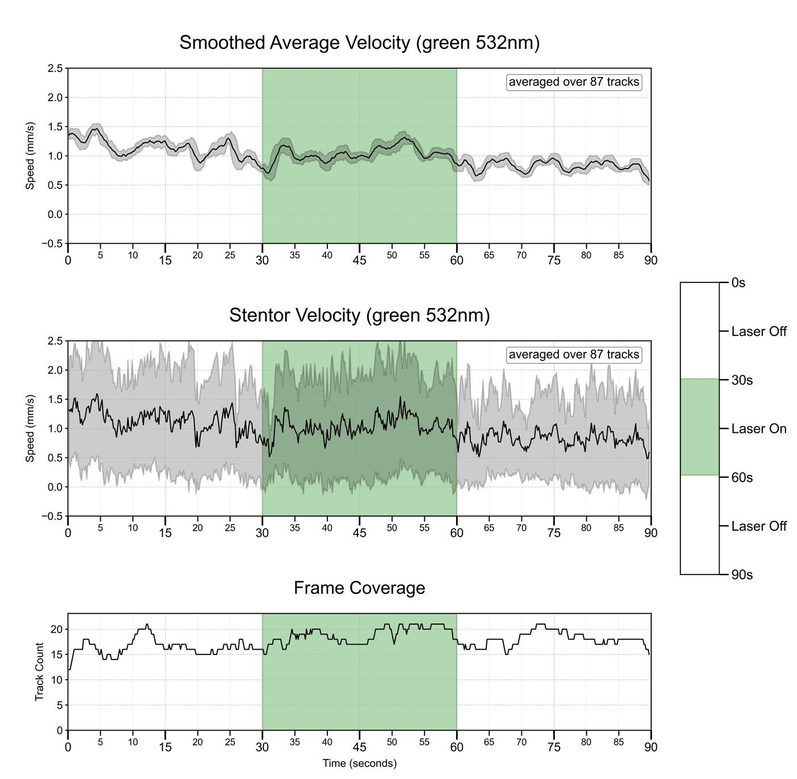

Example well-plate imaging output — raw bursts, laser-timed stimulus runs, and post-processed video.
Well C5 — reconstructed raw-burst capture (10s, real experiment run).

Baseline IR (850nm) well capture
During green (532nm) laser stimulusMore captures will be added here over time.

Stentor coeruleus swimming speed under green (532nm) laser stimulation — 30s off / 30s on / 30s off, averaged over 87 tracks. Green-light stimulation measurably alters swimming behavior, validating the platform's laser-timed capture pipeline.